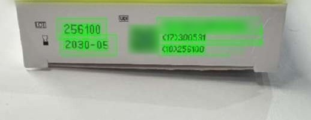
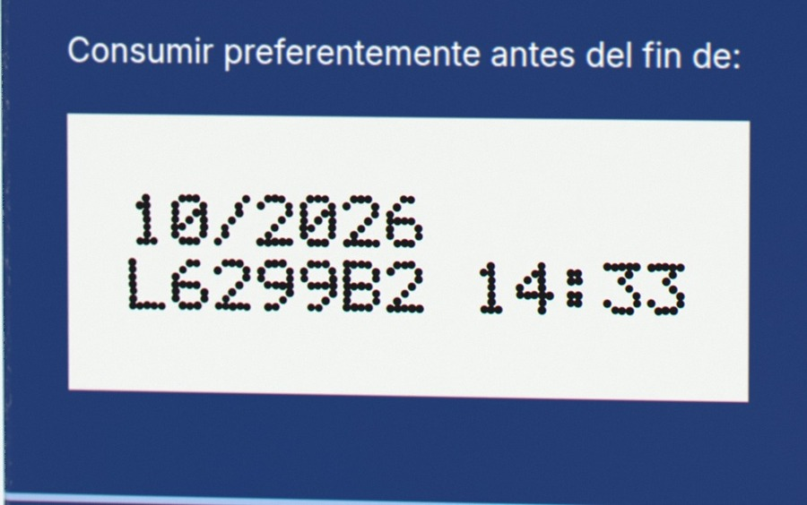
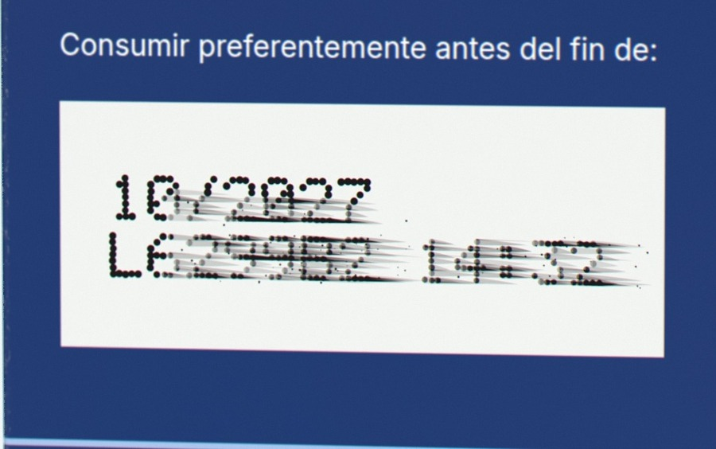
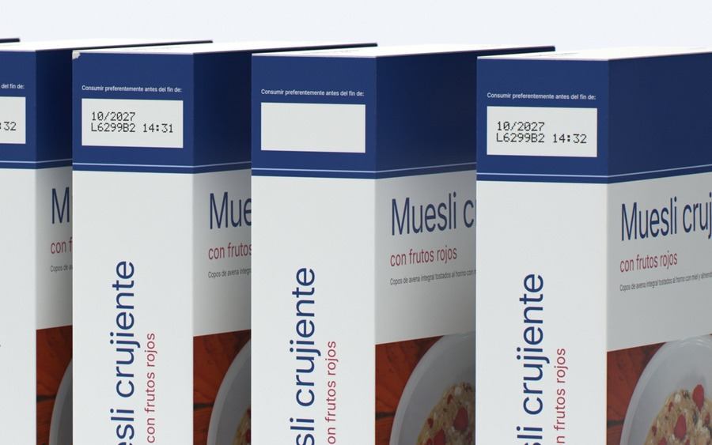

Cada marcaje, leído y comparado con la receta
OPTICAIS lee el contenido variable impreso, lo contrasta con los datos esperados del producto y clasifica cada lectura como OK o NOK en tiempo real.

Lecturas
| Texto OCR | Lote, fecha de caducidad y número de serie |
|---|---|
| Códigos 1D y 2D | Data Matrix: presencia, legibilidad y contenido |
| Motivos fijos | Impresos, para validar el contenido y su coherencia |
| Posición | Del marcaje en el envase |
| Campos | OCR y de códigos ilimitados; su número influye en la cadencia |

Fecha incorrecta

Marcaje ilegible

Marcaje ausente

Cámara
Cámara instalada sobre la zona de control de la línea.
Tecnologías de marcaje
Para la lectura OCR, los caracteres impresos no deben tocarse entre sí. El número de campos analizados influye en la cadencia.